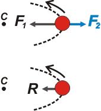

|
|
Las enseñanzas del Maestro Ciruela
¡Aguante
la fuerza centrífuga!
Hoy les voy a contar qué fuerzas
centrífugas me expulsaron precipitadamente del Comité de Físicos Encumbrados,
y me obligaron a ejercer la docencia escondiendo mi identidad.
Todo comenzó
en un curso en el que mis alumnos insistían con que las fuerzas centrífugas no
existían, que sus anteriores docentes -y también los futuros, por qué no- les
habían jurado y perjurado que las fuerzas centrífugas no son interacciones verdaderas,
y suponer su existencia era una prueba de la más perversa ignorancia científica.
Yo sólo había dicho tímidamente que la sola aceptación del principio de
acción y reacción hacía inferir que si había una fuerza centrípeta (de la que
nadie dudaba, ni mis alumnos, fíjense) entonces su par de interacción podía ser
centrífugo, ya que los pares de interacción tienen sentidos opuestos y el sentido
opuesto a la centrípeta -habitualmente- es centrífugo. En ese momento no insistí
porque temía por mi integridad física (creo que ya antes les hablé de mis alumnitos...).
Sin embargo, cuando llegué a casa decidido a presentar batalla, hice una
breve investigación bibliográfica. Para mi sorpresa, casi todos los textos de
Física que tenía -el Tipler, el Resnik, el Alonso, el Sears, el Hewitt, el Roederer,
el Feynman, el Gettys... verán que no tengo pocos- decían exactamente lo mismo
que mis pichones. Varios textos, inclusive, degradaban a las supuestas fuerzas
centrífugas a la condición de fuerza ficticia o pseudofuerza. Y otros -eso era
lo peor- postulaban las condiciones en que podía aparecer una fuerza ficticia:
esto es un sistema no-inercial, y definían -a partir de esas condiciones- qué era
una fuerza centrífuga... qué vivos. También abrían el paraguas casi todos los
autores sobre el error común que cometen los legos de suponer la existencia de
una fuerza centrífuga cuando no la hay, y de no advertir la interacción centrípeta
donde y cuando corresponde. Por evitar un error, cometieron otro... pero doble.
Eso
fue lo que les expresé a mis colegas en la reunión anual: que si se definía fuerza
centrípeta (con auténtico derecho literal) como una fuerza que apunta permanentemente
hacia un punto (centro de un movimiento circular) entonces, con idéntico criterio,
fuerza centrífuga era una interacción que apunta permanentemente desde ese punto
hacia afuera; y que cualquier otra definición para fuerza centrífuga debía ser no
contradictoria con la anterior para no violentar significados tan claros y explícitos.
Centrífugo es lo que apunta radialmente hacia afuera; eso es inmodificable. Además,
les dije que yo encontraba permanentemente esas interacciones, que me resultaban
muy simpáticas, y les mostré algunas. Por último, les aseguré que aceptaba -y
de muy buen grado- que cuando un cuerpo gira, la suma de todas sus interacciones
debe apuntar hacia el centro de rotación. Pero les advertí que no hay ninguna
restricción para que dentro de esa sumatoria de fuerzas haya una o varias centrífugas.
Esa fue la última vez que pisé el Centro, del que tuve que fugar sin mis
credenciales. Desde entonces uso bigotes y me hago llamar Ciruela.
|
| Sobre las manos de este caballero está actuando una fuerza, a todas luces, centrífuga. |
|
El nombre correcto de las fuerzas no-inerciales es fuerza no inercial. A ellas les cabe la descripción (correcta) de fuerza ficticia, o pseudofuerza. Fuerza centrífuga, en cambio, quiere decir otra cosa: apuntar todo el tiempo de un centro hacia afuera. |
|
 |
| Esquema
de dos cuerpos girando atados por cuerdas. |
|
|  |
| Sobre
el cuerpo que gira más adentro (rojo) actúan dos fuerzas: una para adentro, F1, que realiza
la cuerda que la une al centro, C; y otra para afuera, F2, que realiza la soga que
lo ata al cuerpo exterior. F1 es centrípeta, y F2 (en azul) ¡centrífuga!, cualquiera se da
cuenta. La suma de ambas, R, es centrípeta, tal como asegura Newton. |
|
| |
|
Artículo
publicado en la revista EXACTAmente. Algunos derechos reservados.
Se permite su reproducción citando la fuente. Última actualización jun-06. Buenos Aires, Argentina. |
|